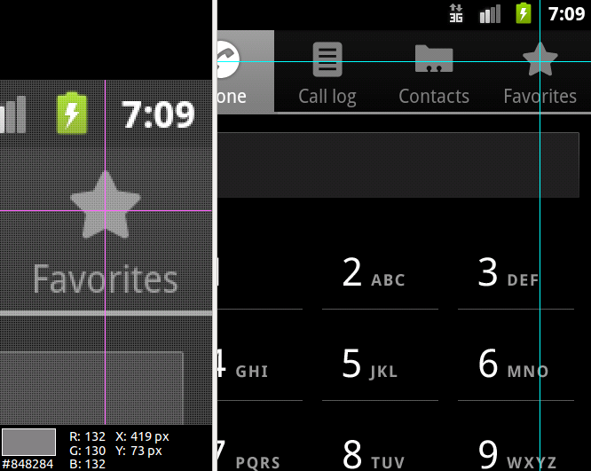
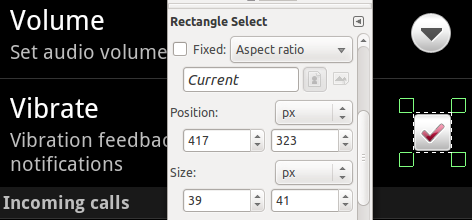
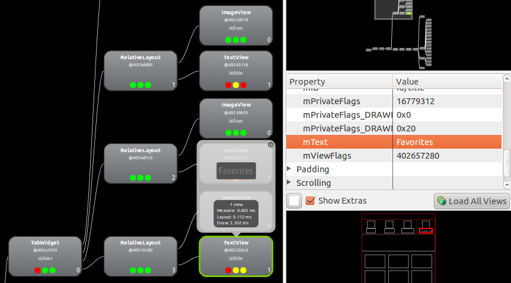

monkeyrunner 裡跟多點觸控手勢有關的 API 雖然簡單，但卻非常強大。簡單地說，幾乎使用者所有的觸控操作都可以模擬出來，但前題你要知道手指頭要擺在哪裡，也就是 API 所需要的座標值。
有一些取得座標值的方法，但都不是 API 直接提供的：
比較過各種方式之後，會發現 ADP 真的是測試的好幫手，它上面有 Google Play，又支援 viewer server 做 component-based 的測試（而且夠快）。
事先算好座標值
|
|
這種座標值通常換支手機就不適用了。也曾聽過可以依不同螢幕大小的比例調整座標值，但並非螢幕上所有的元件都會等比例放大，所以這個做法還是相當侷限。 |
最方便的就是用 Hierarchy Viewer 的 Pixel Perfect View 直接取得畫面上某個位置的座標值。但這個方法只能搭配特定版本的 Android 系統運作。

否則就得先抓取手機螢幕的畫面，再從影像軟體裡量測某個位置的座標值，例如 GIMP 的 Rectangle Select Tool：

>>> device.touch(419, 73, MonkeyDevice.DOWN_AND_UP)[TBD] 發現 Emulator 的 Dev Tools > Development Settings > Pointer Location 可以在畫面上方顯示。
動態取得元件的座標值
|
|
基本上這種做法的適應性很強，當然也要輔以程式開發階段就有事先安插測試會用到的 ID。不過最可惜的是，這種做法只能搭配特定版本的 Android 系統運作。 |
用 monkeyrunner API 裡未公開的 HierarchyViewer API 取得某個元件的座標值。

>>> tabs = viewer.findViewById('id/tabs')  >>> tabs.children, len(tabs.children)
([android.widget.RelativeLayout@40590ff0, android.widget.RelativeLayout@405a4fc8, android.widget.RelativeLayout@405423d8, android.widget.RelativeLayout@40549238], 4)
>>> fav_label = tabs.children[3].children[1]
>>> fav_icon = fav_label.parent.children[0]
>>> tabs.children, len(tabs.children)
([android.widget.RelativeLayout@40590ff0, android.widget.RelativeLayout@405a4fc8, android.widget.RelativeLayout@405423d8, android.widget.RelativeLayout@40549238], 4)
>>> fav_label = tabs.children[3].children[1]
>>> fav_icon = fav_label.parent.children[0]  >>> viewer.getText(fav_label)
>>> viewer.getText(fav_label)  u'Favorites'
>>> point = viewer.getAbsoluteCenterOfView(fav_icon); point
Point {420, 71}
>>> device.touch(point.x, point.y, MonkeyDevice.DOWN_AND_UP)
u'Favorites'
>>> point = viewer.getAbsoluteCenterOfView(fav_icon); point
Point {420, 71}
>>> device.touch(point.x, point.y, MonkeyDevice.DOWN_AND_UP) 
從 Layout View 上可以觀察到，畫面上四個頁籤都有重複的 ID（id/icon 跟 id/title），只好往上尋求 ID 是唯一值的元件 id/tabs。
| |
透過 ViewNode.parent 跟 ViewNode.children 遶行 view tree，索引值可以直接從 Tree View 中每個節點右下角的數字得知。
| |
確認 tabs.children[3].children[1] 真的有定位到 Favorites 這個頁籤，而且透過元件取得的座標值 (420, 71) 跟手動從 Pixel Perfect Viewer 上求得的 (419, 73) 很接近。
| |
最後將座標值交給 MonkeyDevice.touch() 就可以成功切換到 Favorites 頁籤。
|
以圖找位置
假設事先拍好瀏覽器的圖示 ，希望執行期可以從螢幕快照中找到圖示出現的位置：
這個動作能否成功，端看以圖找圖的工具除了精確的比對之外，是否也能將 "相似度" （Similarity） 也考量進來，否則比對很有可能只是因為背景稍許的不同就失敗了。Sikuli 就很適合拿來實作 Android 自動化測試中 "以圖找位置" 的功能。
避開這個問題最簡單的方式就是尋找目標的圖示儘量避開背景，另外考量系統字型不同與 L10N 自動化測試，截圖時也應該儘量避開文字。